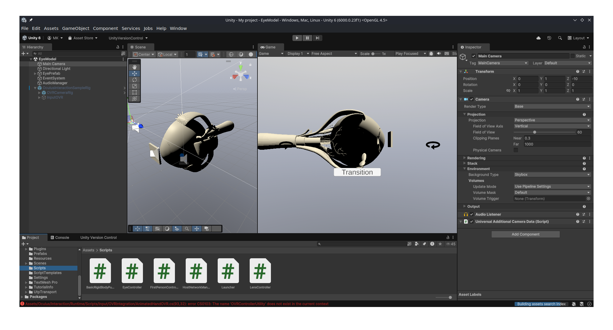
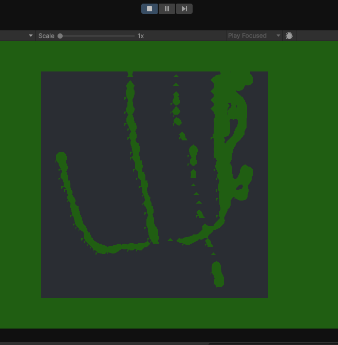
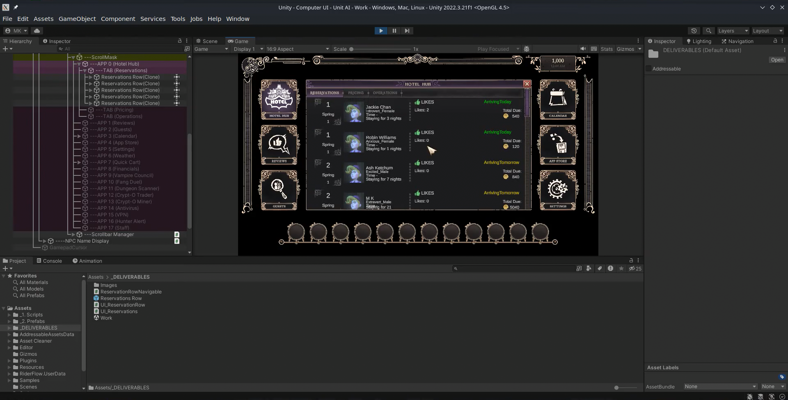
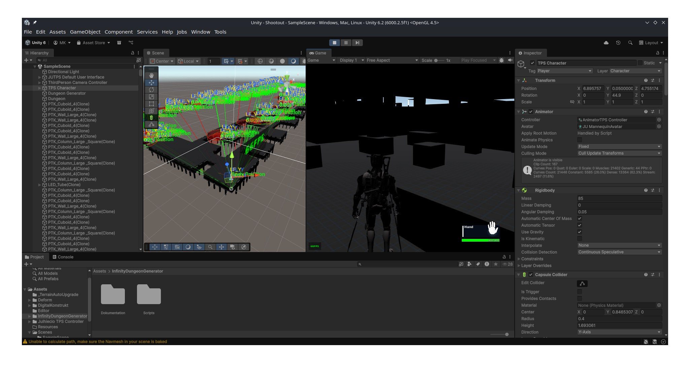

07 / CLIENT↗Eye-Care VR App
Meta Quest 2 · Netcode · UI Toolkit
UNITY DEVELOPER · MAKER
Hi, I’m Murtaza (MK) Kanorwala. I build interactive 2D/3D games in Unity and keep a personal archive of the things that inspire me.
01 — SELECTED WORK
A collection of prototypes, game projects, collaborations and experiments.
 01 / GAME↗
01 / GAME↗2.5D combat · buffered combos · hit-stop

02 / RESEARCH↗Mesh deformation through math & logic
Arcade game prototype
Music-led timing and feedback
A small game about timing and chance
Fast, focused arcade action

07 / CLIENT↗Meta Quest 2 · Netcode · UI Toolkit

08 / CLIENT↗Reservation panel & interface logic

09 / EXPERIMENT✳Procedural room exploration
Casino game · 2D multiplayer chess · Low-poly zombie FPS · Cheese Factory Myth · VR car simulator · Multiplayer magic game · Visual novel · RPSLS · JOJO Fight · Music prototype · Swinger
02 — THE PERSON BEHIND THE WORK
I’ve been working as a freelancer, building interactive 2D/3D games using Unity3D with a focus on gameplay systems, physics mechanics, and mobile performance.
Now, I’m looking to transition into a full-time role as a Unity Developer. I’m working toward joining a AAA game studio and building meaningful, high-quality game experiences.
View the original Unity portfolio ↗03 — EXPERIENCE & EDUCATION
From testing games to building them: a path shaped by curiosity and craft.
Unity Developer
Built interactive 2D/3D games in Unity3D with a focus on gameplay systems, physics mechanics, and mobile optimization.
FullStack Game Development
Completed an intensive game development bootcamp focusing on Unity, C#, game architecture, and version control. Built and published multiple game prototypes, and participated in peer code reviews, design challenges, and industry-led mentorship sessions.
B.Sc. Computer Science
Studied data structures, algorithms, OOP, and databases. Built a patient prescription management system for a private clinic using ASP.NET.
04 — WHAT I BRING
A broad skill span across systems, art, testing and collaboration.
Unity (C#), VR/AR, Ren’Py, gameplay systems, physics simulation, procedural systems, rapid prototyping, mobile optimization, Cinemachine, Shader Graph, UI Toolkit, object pooling.
OOP, MVC architecture, singletons, event systems, interfaces, debugging, profiling and optimization.
GitHub Desktop, Plastic SCM, GitKraken, JIRA, developer-mode debugging, multiplayer stress testing, AI & physics validation, test case design.
Canva, visual composition, asset sourcing, communication and client interaction. Fluent in English and Hindi; conversational in Gujarati, Arabic and Marathi; learning Chinese.
05 — OUTSIDE THE BUILD
Know MK is my living archive: capturing, organizing, distilling, expressing. Step into the original collections below.
Identity, philosophy, travel, languages, personality, TV and more.
EXPLORE COLLECTION ↗Anime, art, dance, music, outdoors, rides, sports and video games.
EXPLORE COLLECTION ↗Collections, directors, mathematics, internet, idols and ideas.
EXPLORE COLLECTION ↗Goals, routines and the connections that shape my perspective.
EXPLORE COLLECTION ↗06 — LET’S MAKE SOMETHING
I’m looking to create meaningful, high-quality game experiences with thoughtful people.
Start a conversation ↗